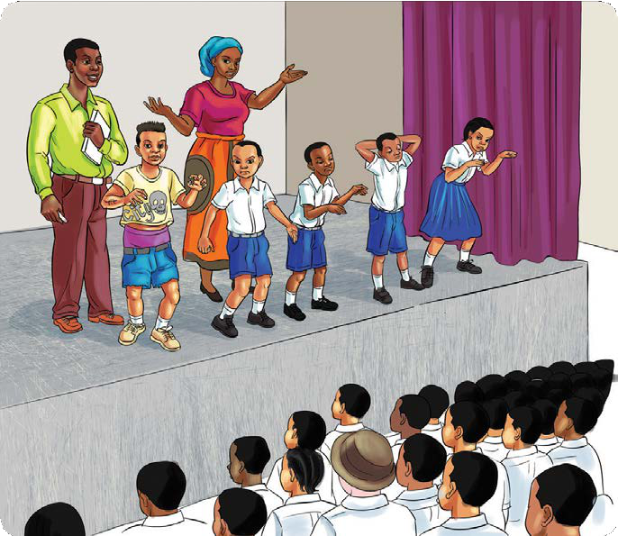

Ufahamu
Soma igizo lifuatalo, kisha jibu maswali yanayofuata.

Sauti ilisikika ikituarifu kuwa igizo linaanza. Watu wote walikuwa kimya kabisa. Mara pazia lilifunguliwa. Wahusika wote wa igizo hilo walionekana jukwaani wakiwa wameganda kwa mitindo tofautitofauti. Watazamaji wakapiga kelele za shangwe kwa walichoona.
Igizo letu linahusu mtoto mtukutu aitwaye Tukutu. Tukutu hawasikilizi wazazi na walimu wake na hata wanafunzi wenzake. Nini kitatokea? Tusimalize utamu. Tujionee wenyewe.
Tunawakaribisha nyote kujionea mambo mazuri tuliyoandaa. Karibuni sana! (Wote wanajitambulisha uhusika wao na pazia linafungwa.)
(Wote wanapiga makofi, vigelegele na mbinja. Muda huohuo pazia linafunguliwa.)
Tukutu! Tukutu! Amka uende shule.
Aaa! Mama! Mambo gani hayo? Mbona unaniharibia usingizi?
Mwanangu, mbona siku hizi umebadilika? Tabia yako imekuwa ya ajabu!
Mama, nitaenda shuleni baadaye.
Wewe! Unasemaje? Haya, amka haraka uoge, unywe chai, uende shule. (Tukutu anakubali kuamka. Anaenda kuoga, anakunywa chai na kuondoka kwenda shuleni.)
Tukutu, kwa nini umechelewa?
Mwalimu, nilikuwa ninaumwa tumbo.
Haya! Ingia darasani haraka; kisha, andika maswali yaliyopo ubaoni. Ni ya somo nililowafundisha jana.
Mwalimu, mimi sina kalamu. Siwezi kuandika kwa sababu sioni ubaoni. (Tukutu anatoa sababu nyingi.)
Haya! Kalamu hii hapa. Sasa ninataka ujibu maswali katika daftari lako. (Anaondoka. Tukutu anabaki akiwasumbua wenzake darasani.)
Kisa, ninataka unijibie maswali yote. Usipofanya hivyo, nitakupiga.
Jibu mwenyewe. Siwezi kukujibia. (Tukutu anafanya fujo darasani; anawanyang’anya wenzake madaftari ili anakili majibu. Wenzake wanakataa. Yeye anaanza kuwapiga.)
(Akielekea ofisi ya walimu kwa huzuni kutoa taarifa kwa mwalimu.) Mwalimu, Tukutu anatusumbua darasani. Anatupiga na kutunyang’anya madaftari.
(Anaingia darasani.) Tukutu njoo ofisini haraka. (Tukutu anamfuata mwalimu.) (Mwalimu anamfokea Tukutu.) Tukutu una nini wewe? Kwa nini unawasumbua wenzako darasani?
(Akirusha mikono.) Mwalimu, mimi sitaki kusoma.
Nenda nyumbani kamwite mzazi wako. (Tukutu anarudi nyumbani. Njiani anakutana na rafiki yake Kiduku.)
Aaa! Tukutu unaenda wapi? Twende huku ukatulize akili.
Sasa rafiki yangu Kiduku, unataka twende wapi?
Twende nikupeleke sehemu moja ukafurahie maisha.
(Anakubali na kumfuata Kiduku.) Sehemu hiyo ina nini cha kunifurahisha?
Wewe fuata nyuki ule asali; utafurahi tu. (Wote wanacheka, haa! Haa! Haa! Wanafika uchochoroni sehemu iliyojificha ambayo Kiduku hukutania na vibaka wenzake.)
Hapa umepajuaje? Mbona panatisha?
(Anamkwida na kutaka kumnyang’anya begi la shule.) Sasa uko hatarini, kwa usalama wako toa ulicho nacho. (Tukutu analing’ang’ania begi lake. Kiduku anapatwa na hasira na kumpiga mateke na vichwa. Tukutu anaanguka chini. Kiduku anachukua begi, anatupa madaftari chini na anaondoka nalo. Tukutu anabaki amelala pale chini. Wanafunzi wakiwa wanarudi nyumbani, njiani wanakutana na mbwa mkali; anawafukuza. Wanakimbilia pande tofautitofauti. Mmoja wao, ambaye ni Shauri, anajikuta kwenye kichochoro ambako Tukutu ameachwa.)
(Anashituka na kuanza kuita kwa sauti.) Tukutu! Tukutu! Umefanya nini? Amka!
(Akiinuka.) Loo! Kiduku amenipiga na kuninyang’anya begi. Ama kweli usilolijua ni kama usiku wa giza!
Twende upesi nikupeleke nyumbani. Hapa si mahali salama kabisa. (Wanaondoka wote kwenda nyumbani, huku Tukutu akichechemea na uso wote ukiwa umevimba.)
Rafiki yangu Tukutu, umekuwa mkaidi sana. Humsikilizi mama yako, walimu na hata wanafunzi wenzako. Hii tabia yako italeta madhara katika masomo yako na maisha yako kwa ujumla. Kuanzia sasa, anza kusoma kwa bidii kama mimi. Watu watakupenda.
Asante sana kwa ushauri wako. Nitaomba msamaha kwa mama, walimu, Kisa na wanafunzi wote niliowakosea. Ama kweli akufaaye kwa dhiki ndiye rafiki wa kweli. (Pazia linafungwa na watu wanapiga makofi na vigelegele.)